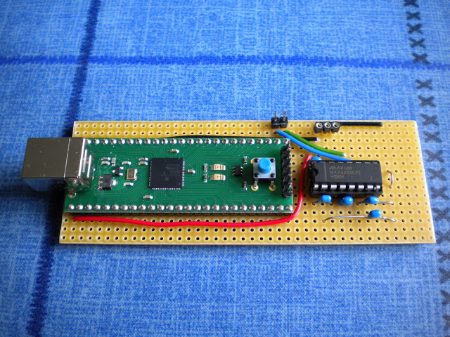
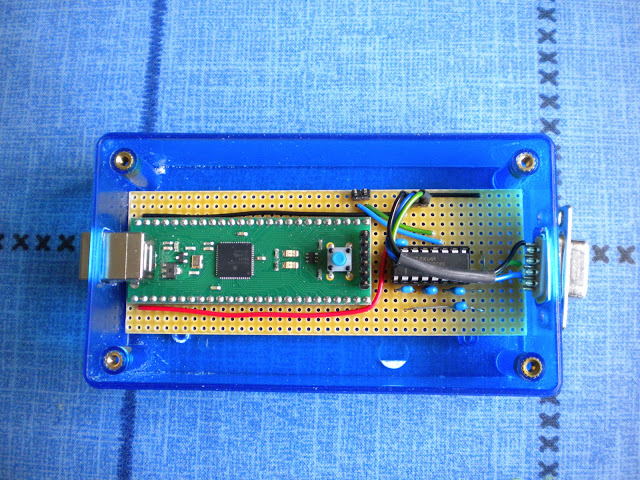
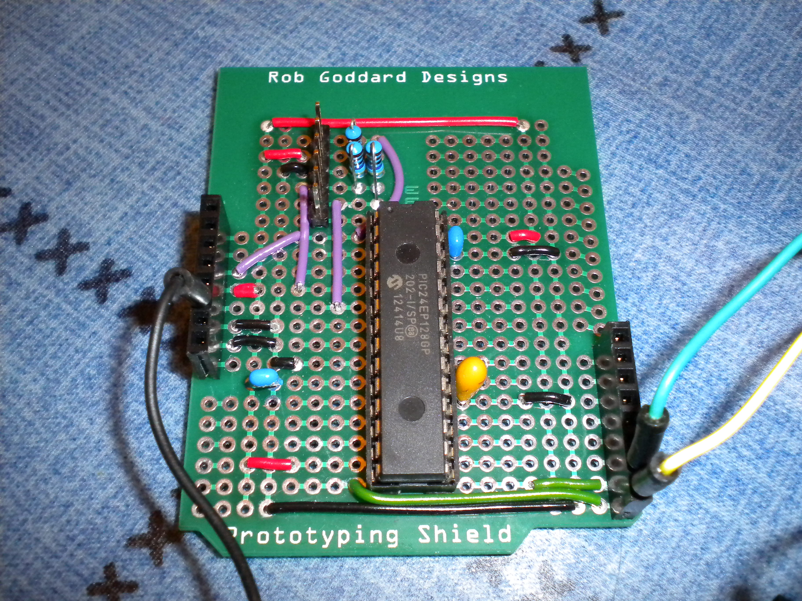

EM-65C02 - A PIC based 65C02 Emulation
I started this project in 2010 following a discussion on 6502.org about using microcontrollers to emulate first generation microprocessors.
As I have lots of experience using Microchip devices I thought I'd see what I could make one of them do. The results has been quite interesting.
Features
The latest version of the EM-65C02 firmware supports:
- WDC 65C02 instruction set (tested with Klaus Dormanns
test suite)
- supports decimal mode
- support for interrupts (with WAI and STP instructions)
- 2, 4, 8, 16 or 64K of RAM (depending on host device)
- 32K of ROM (copied to RAM on power up if possible)
- Access to dsPIC perpherials and memory via COP opcode ($02)
The source code for EM-65C02 is compatible with most 24F/30F/33F/33EP dsPIC devices. If the hosting device has a small RAM area then a 2, 4, 8 or 16K region is mapped to $0000-$7FFF by repeating it to fill the 32K range, while the 32K ROM area is mapped to $8000-$FFFF. Devices with Extended Data Space (EDS) can have a full 64K of RAM which is initialised with 32K of ROM image on power up.
The speed of the emulation depends on the oscillator frequency of the host device. A 24F device is typically 32MHz (16 MIPS) and gives an emulated 65C02 performance of 1MIP (e.g. 16 PIC instruction to emulate one 65C02 instruction). Other device families can run significantly faster as shown below but support less RAM. The 24EP/33EP devices have a highest clock rate but changes to the instruction execution cycles make some
| Host | 65C02 | ||||
|---|---|---|---|---|---|
| Family | Mhz | MIPS | Mhz | MIPS | RAM |
| 24F | 32 | 16 | 2.0 | 1 | 2-64K |
| 30F | 60 | 30 | 3.6 | 1.8 | |
| 33F | 80 | 40 | 5.0 | 2.5 | |
| 24EP | 140 | 70 | 6.0 | 3.0 | 2-28K |
| 33EP | 140 | 70 | 6.0 | 3.0 | 2-28K |
Normally I/O peripherals are memory mapped on 65C02 systems but the cost of checking a target memory address to determine if it should resolve to RAM, ROM or a peripheral register would serious impact on execution speed so I decided to borrow the coprocessor (COP) instruction from the 65C816 as a means of accessing the host's hardware.
Development Platform
My main development platform at the moment is a DEV-PIC24FJ256GB206 module supplied by Robot-Electronics. The PIC24FJ256GB206 contains 66K of Extended Data Space (EDS) which can be mapped in 32K chunks into the data address space however it executes relatively slowly.

The enclosure has a hole for a DB9 serial connector which connects to the board. I use a USB Serial adapter to access the device from my PC. Eventually it will have a USB CDC driver in firmware to allow it to be connected directly to a USB socket.

I've only broken out two pins from the module for serial interfacing. I want to add an SPI interface to an SD card to give the emulated 65C02 a virtual hard drive.
The second developement board I've build uses an Arduino style prototype board and uses a 28 SPDIP device like a 24EP128GP202

The source code and more information about this project can be found at https://sourceforge.net/projects/em-65c02/
The same approach used here could be applied to emulate other 8-bit devices like the 8080, Z-80, 6800, 6809, 6502, 6501, 1802, etc. or even a 16-bit device like the 65C816.
| << Back | Home | Contents | Next >> |
© Copyright 2013 Andrew John Jacobs. All rights reserved.
All trademarks and service marks are the properties of their respective owners.